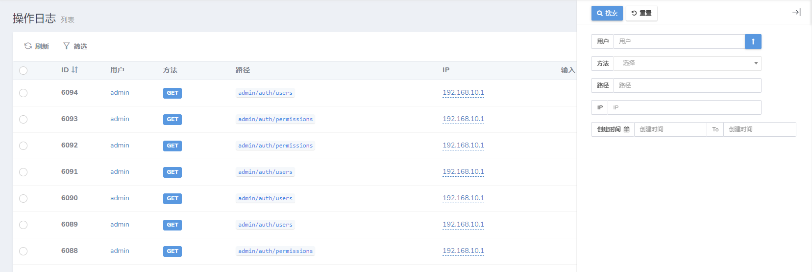

查询过滤
model-grid提供了一系列的方法实现表格数据的查询过滤：
// 禁用
$grid->disableFilter();
// 显示
$grid->showFilter();
// 禁用过滤器按钮
$grid->disableFilterButton();
// 显示过滤器按钮
$grid->showFilterButton();
$grid->filter(function($filter){
// 展开过滤器
$filter->expand();
// 在这里添加字段过滤器
$filter->equal('id', '产品序列号');
$filter->like('name', 'name');
...
});过滤器布局
默认布局方式为rightSide
rightSide
use Dcat\Admin\Grid;
$grid->filter(function (Grid\Filter $filter) {
// 更改为 rightSide 布局
$grid->rightSide();
...
});效果
panel
use Dcat\Admin\Grid;
$grid->filter(function (Grid\Filter $filter) {
// 更改为 panel 布局
$grid->panel();
...
});效果
查询类型
目前支持的过滤类型有下面这些:
equal
sql: ... WHEREcolumn= "$input"：
$filter->equal('column', $label);notEqual
sql: ... WHEREcolumn!= "$input"：
$filter->notEqual('column', $label);like
sql: ... WHEREcolumnLIKE "%$input%"：
$filter->like('column', $label);ilike
sql: ... WHEREcolumnILIKE "%$input%"：
$filter->ilike('column', $label);startWith
sql: ... WHEREcolumnLIKE "$input%"：
$filter->startWith('column', $label);
// 如果需要使用“ilike”
$filter->startWith('column', $label)->ilike();endWith
sql: ... WHEREcolumnLIKE "%$input"：
$filter->endWith('column', $label);
// 如果需要使用“ilike”
$filter->endWith('column', $label)->ilike();gt
sql: ... WHEREcolumn> "$input"：
$filter->gt('column', $label);lt
sql: ... WHEREcolumn< "$input"：
$filter->lt('column', $label);ngt
sql: ... WHEREcolumn<= "$input"：
$filter->ngt('column', $label);nlt
sql: ... WHEREcolumn>= "$input"：
$filter->nlt('column', $label);between
sql: ... WHEREcolumnBETWEEN "$start" AND "$end"：
$filter->between('column', $label);
// 设置datetime类型
$filter->between('column', $label)->datetime();
// 设置time类型
$filter->between('column', $label)->time();in
sql: ... WHEREcolumnin (...$inputs)：
$filter->in('column', $label)->multipleSelect(['key' => 'value']);notIn
sql: ... WHEREcolumnnot in (...$inputs)：
$filter->notIn('column', $label)->multipleSelect(['key' => 'value']);date
sql: ... WHERE DATE(column) = "$input"：
$filter->date('column', $label);day
sql: ... WHERE DAY(column) = "$input"：
$filter->day('column', $label);month
sql: ... WHERE MONTH(column) = "$input"：
$filter->month('column', $label);year
sql: ... WHERE YEAR(column) = "$input"：
$filter->year('column', $label);复杂查询where
可以用where来构建比较复杂的查询过滤
sql: ... WHEREtitleLIKE "%$input" ORcontentLIKE "%$input"：
$filter->where('search', function ($query) {
$query->where('title', 'like', "%{$this->input}%")
->orWhere('content', 'like', "%{$this->input}%");
});sql: ... WHERErate>= 6 ANDcreated_at= {$input}:
$filter->where(function ($query) {
$query->whereRaw("`rate` >= 6 AND `created_at` = {$this->input}");
}, 'Text');关系查询，查询对应关系profile的字段：
$filter->where(function ($query) {
$query->whereHas('profile', function ($query) {
$query->where('address', 'like', "%{$this->input}%")->orWhere('email', 'like', "%{$this->input}%");
});
}, '地址或手机号');过滤器组group
有时候对同一个字段要设置多种筛选方式，可以通过下面的方式实现
$filter->group('rate', function ($group) {
$group->gt('大于');
$group->lt('小于');
$group->nlt('不小于');
$group->ngt('不大于');
$group->equal('等于');
});有下面的几个方法可以调用
// 等于
$group->equal();
// 不等于
$group->notEqual();
// 大于
$group->gt();
// 小于
$group->lt();
// 大于等于
$group->nlt();
// 小于等于
$group->ngt();
// 匹配
$group->match();
// 复杂条件
$group->where();
// like查询
$group->like();
// like查询
$group->contains();
// ilike查询
$group->ilike();
// 以输入的内容开头
$group->startWith();
// 以输入的内容结尾
$group->endWith();范围查询scope
可以把你最常用的查询定义为一个查询范围，它将会出现在筛选按钮的下拉菜单中，下面是几个例子：
$filter->scope('male', '男性')->where('gender', 'm');
// 多条件查询
$filter->scope('new', '最近修改')
->whereDate('created_at', date('Y-m-d'))
->orWhere('updated_at', date('Y-m-d'));
// 关联关系查询
$filter->scope('address')->whereHas('profile', function ($query) {
$query->whereNotNull('address');
});
$filter->scope('trashed', '被软删除的数据')->onlyTrashed();scope方法第一个参数为查询的key, 会出现的url参数中，第二个参数是下拉菜单项的label, 如果不填，第一个参数会作为label显示
scope方法可以链式调用任何eloquent查询条件，效果参考Demo
表单类型
text
表单类型默认是text input，可以设置placeholder：
$filter->equal('column')->placeholder('请输入。。。');也可以通过下面的一些方法来限制用户输入格式：
$filter->equal('column')->url();
$filter->equal('column')->email();
$filter->equal('column')->integer();
$filter->equal('column')->ip();
$filter->equal('column')->mac();
$filter->equal('column')->mobile();
// $options 参考 https://github.com/RobinHerbots/Inputmask/blob/4.x/README_numeric.md
$filter->equal('column')->decimal($options = []);
// $options 参考 https://github.com/RobinHerbots/Inputmask/blob/4.x/README_numeric.md
$filter->equal('column')->currency($options = []);
// $options 参考 https://github.com/RobinHerbots/Inputmask/blob/4.x/README_numeric.md
$filter->equal('column')->percentage($options = []);
// $options 参考 https://github.com/RobinHerbots/Inputmask, $icon为input前面的图标
$filter->equal('column')->inputmask($options = [], $icon = 'pencil');selectResource
选择数据源，选择弹窗里面的表格数据。
// 单选
$filter->equal('user_id')
->selectResource('pages/users')
->placeholder('请选择。。。')
->options(function ($v) { // options方法用于显示已选中的值
if (!$v) return $v;
$userModel = config('admin.database.users_model');
return $userModel::findOrFail($v)->pluck('name', 'id');
});
// 多选
$filter->in('user_id')
->selectResource('pages/users')
->multiple(3) // 最多选择3个选项，不传则不限制
->options(function ($v) { // options方法用于显示已选中的值
if (!$v) return $v;
$userModel = config('admin.database.users_model');
return $userModel::findOrFail($v)->pluck('name', 'id');
});pages/users页面实现：
/**
* Index interface.
*
* @return Content
*/
public function index(Content $content)
{
if (request('_mini')) {
return $content->body($this->miniGrid());
}
...
}
protected function miniGrid()
{
$grid = new MiniGrid(new Administrator());
// 指定行选择器选中时显示的值的字段名称
// 指定行选择器选中时显示的值的字段名称
// 指定行选择器选中时显示的值的字段名称
// 如果表格数据中带有 “name”、“title”或“username”字段，则可以不用设置
$grid->setRowSelectorOptions(['label' => 'username']);
$grid->id->sortable();
$grid->username;
$grid->name;
$grid->filter(function (Grid\Filter $filter) {
$filter->equal('id');
$filter->like('username');
$filter->like('name');
});
return $grid;
}
select
$filter->equal('column')->select(['key' => 'value'...]);
// 或者从api获取数据，api的格式参考model-form的select组件
$filter->equal('column')->select('api/users');multipleSelect
一般用来配合in和notIn两个需要查询数组的查询类型使用，也可以在where类型的查询中使用：
$filter->in('column')->multipleSelect(['key' => 'value'...]);
// 或者从api获取数据，api的格式参考model-form的multipleSelect组件
$filter->in('column')->multipleSelect('api/users');datetime
通过日期时间组件来查询，$options的参数和值参考bootstrap-datetimepicker
$filter->equal('column')->datetime($options);
// `date()` 相当于 `datetime(['format' => 'YYYY-MM-DD'])`
$filter->equal('column')->date();
// `time()` 相当于 `datetime(['format' => 'HH:mm:ss'])`
$filter->equal('column')->time();
// `day()` 相当于 `datetime(['format' => 'DD'])`
$filter->equal('column')->day();
// `month()` 相当于 `datetime(['format' => 'MM'])`
$filter->equal('column')->month();
// `year()` 相当于 `datetime(['format' => 'YYYY'])`
$filter->equal('column')->year();
常用方法
设置过滤器宽度
// 设置为“1-12”之间的值，默认值是“3”
$filter->equal('column')->width(3);
// 也可以写死宽度
$filter->equal('column')->width('250px');设置默认值
$filter->equal('column')->default('text');
$filter->equal('column')->select([0 => 'PHP', 1 => 'Java'])->default(1);展开过滤器
$filter->expand();
$filter->equal('column');
...不显示过滤器input输入框的边框
$filter->withoutInputBorder();
$filter->equal('column');
...设置过滤器容器样式
$filter->style('padding:0');
$filter->equal('column');
...设置过滤器容器padding
$filter->padding('10px', '10px', '10px', '10px');
$filter->equal('column');
...自定义过滤器
下面通过between的实现来讲解下怎么自定义过滤器。
首先新建一个过滤器类继承Dcat\Admin\Grid\Filter\AbstractFilter：
<?php
namespace Dcat\Admin\Grid\Filter;
use Dcat\Admin\Admin;
use Dcat\Admin\Grid\Filter\Presenter\DateTime;
use Illuminate\Support\Arr;
class Between extends AbstractFilter
{
// 自定义你的过滤器显示模板
protected $view = 'admin::filter.between';
// 这个方法用于生成过滤器字段的唯一id
// 通过这个唯一id则可以用js代码对其进行操作
public function formatId($column)
{
$id = str_replace('.', '_', $column);
$name = $this->parent->getGrid()->getName();
return ['start' => "{$name}{$id}_start", 'end' => "{$name}{$id}_end"];
}
// form表单name属性格式化
protected function formatName($column)
{
$columns = explode('.', $column);
if (count($columns) == 1) {
$name = $columns[0];
} else {
$name = array_shift($columns);
foreach ($columns as $column) {
$name .= "[$column]";
}
}
return ['start' => "{$name}[start]", 'end' => "{$name}[end]"];
}
// 创建条件
// 这里构建的条件支持`Laravel query builder`即可。
public function condition($inputs)
{
if (!Arr::has($inputs, $this->column)) {
return;
}
$this->value = Arr::get($inputs, $this->column);
$value = array_filter($this->value, function ($val) {
return $val !== '';
});
if (empty($value)) {
return;
}
if (!isset($value['start']) && isset($value['end'])) {
// 这里返回的数组相当于
// $query->where($this->column, '<=', $value['end']);
return $this->buildCondition($this->column, '<=', $value['end']);
}
if (!isset($value['end']) && isset($value['start'])) {
// 这里返回的数组相当于
// $query->where($this->column, '>=', $value['end']);
return $this->buildCondition($this->column, '>=', $value['start']);
}
$this->query = 'whereBetween';
// 这里返回的数组相当于
// $query->whereBetween($this->column, $value['end']);
return $this->buildCondition($this->column, $this->value);
}
// 自定义过滤器表单显示方式
public function datetime($options = [])
{
$this->view = 'admin::filter.betweenDatetime';
DateTime::collectAssets();
$this->setupDatetime($options);
return $this;
}
protected function setupDatetime($options = [])
{
$options['format'] = Arr::get($options, 'format', 'YYYY-MM-DD HH:mm:ss');
$options['locale'] = Arr::get($options, 'locale', config('app.locale'));
$startOptions = json_encode($options);
$endOptions = json_encode($options + ['useCurrent' => false]);
// 通过上面格式化后的id对表单进行你想要的操作
$script = <<<JS
$('#{$this->id['start']}').datetimepicker($startOptions);
$('#{$this->id['end']}').datetimepicker($endOptions);
$("#{$this->id['start']}").on("dp.change", function (e) {
$('#{$this->id['end']}').data("DateTimePicker").minDate(e.date);
});
$("#{$this->id['end']}").on("dp.change", function (e) {
$('#{$this->id['start']}').data("DateTimePicker").maxDate(e.date);
});
JS;
Admin::script($script);
}
}admin::filter.between模板内容如下：
<div class="filter-input col-sm-{{ $width }} " style="{!! $style !!}">
<div class="form-group" >
<div class="input-group input-group-sm">
<span class="input-group-addon"><b>{!! $label !!}</b></span>
<input type="text" class="form-control" placeholder="{{$label}}" name="{{$name['start']}}" value="{{ request($name['start'], \Illuminate\Support\Arr::get($value, 'start')) }}">
<span class="input-group-addon" style="border-left: 0; border-right: 0;">To</span>
<input type="text" class="form-control" placeholder="{{$label}}" name="{{$name['end']}}" value="{{ request($name['end'], \Illuminate\Support\Arr::get($value, 'end')) }}">
</div>
</div>
</div>admin::filter.betweenDatetime模板内容如下：
<div class="filter-input col-sm-{{ $width }}" style="{!! $style !!}">
<div class="form-group">
<div class="input-group input-group-sm">
<span class="input-group-addon"><b>{{$label}}</b> <i class="fa fa-calendar"></i></span>
<input type="text" class="form-control" id="{{$id['start']}}" placeholder="{{$label}}" name="{{$name['start']}}" value="{{ request($name['start'], \Illuminate\Support\Arr::get($value, 'start')) }}">
<span class="input-group-addon" style="border-left: 0; border-right: 0;">To</span>
<input type="text" class="form-control" id="{{$id['end']}}" placeholder="{{$label}}" name="{{$name['end']}}" value="{{ request($name['end'], \Illuminate\Support\Arr::get($value, 'end')) }}">
</div>
</div>
</div>现在只要调用extend方法可以使用了，打开app/Admin/bootstrap.php，加入以下代码：
Filter::extend('customBetween', Filter\Between::class);使用：
扩展过滤器方法后IDE默认是不会自动补全的，这时候可以通过
php artisan admin::ide-helper生成IDE提示文件，具体请参考IDE自动补全。
$filter->customBetween('created_at')->datetime();